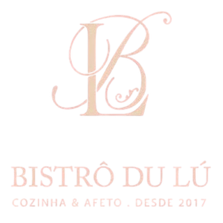
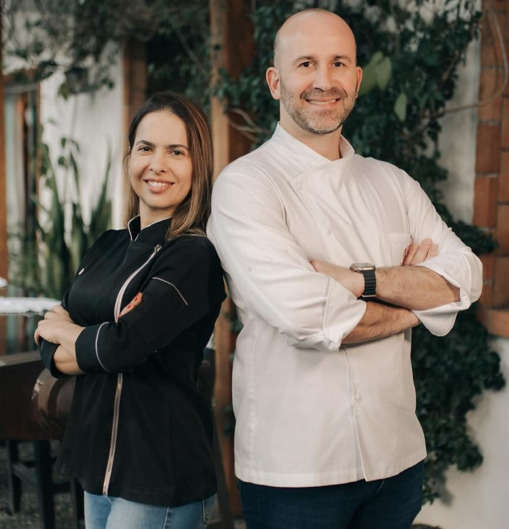
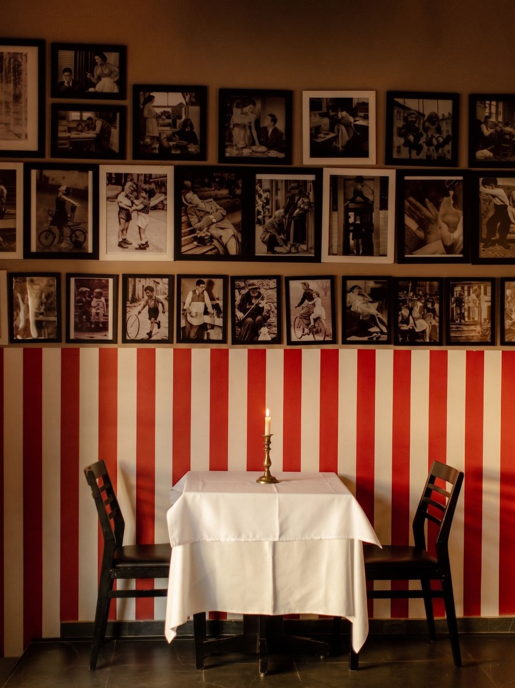
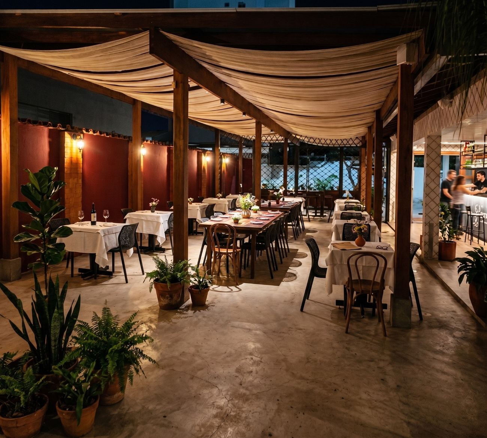
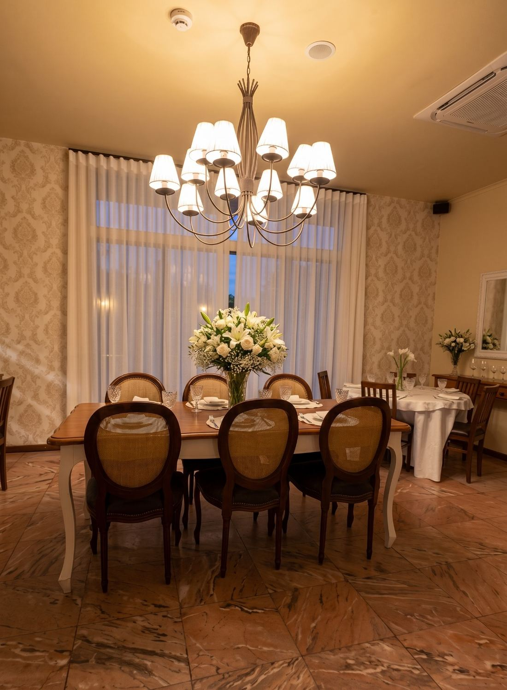
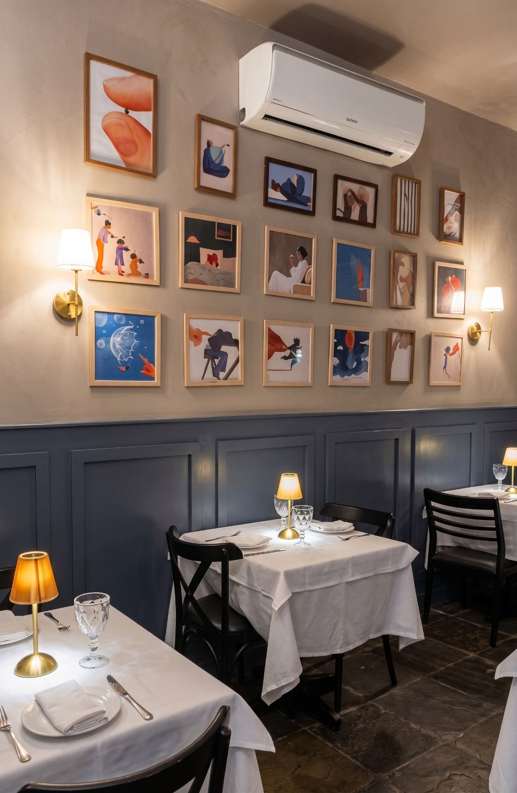
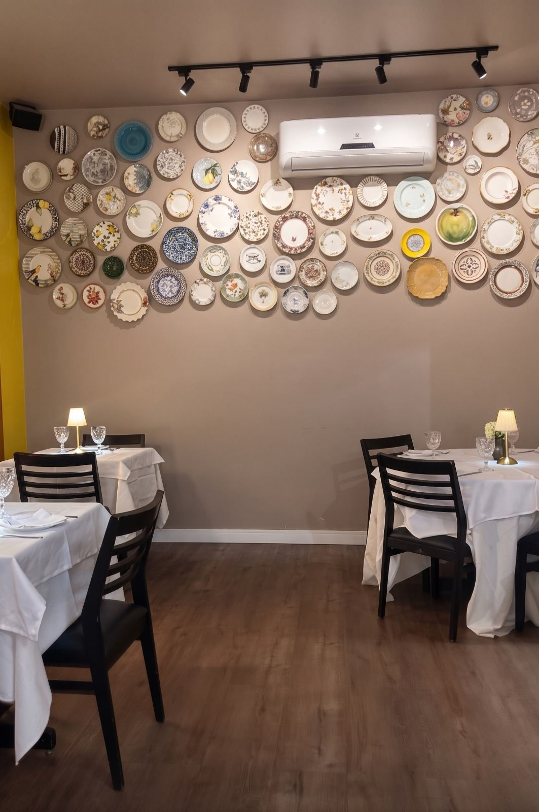
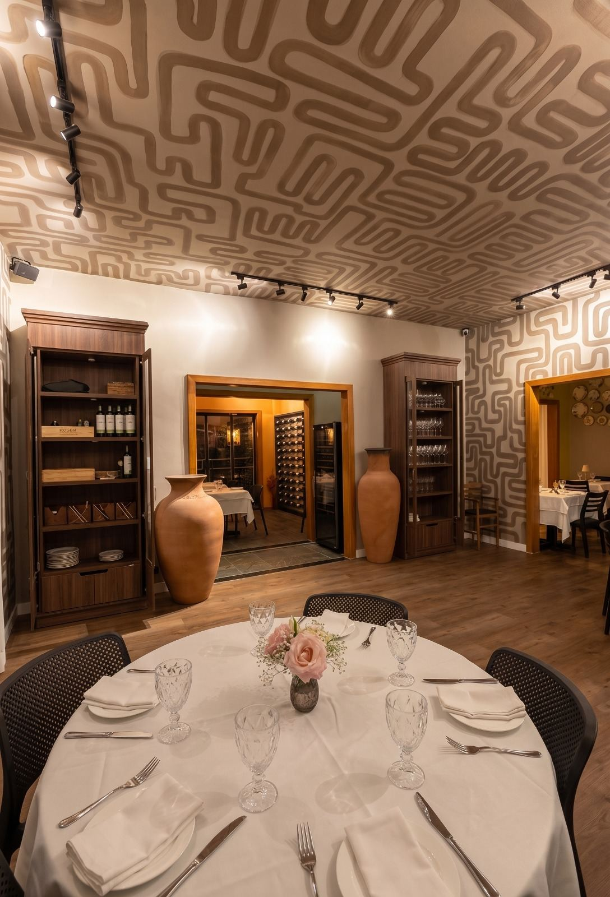

Reservar uma mesa
Família
Sobre nós
Somos, antes de tudo, uma família que decidiu trilhar novos caminhos e abrir um bistrô. Um lugar aconchegante, familiar, romântico e reservado.
Lu
A paixão do Lu pela gastronomia o transformou num chef dedicado.
Raquel
A admiração pelos vinhos transformou Raquel em sommelier e o amor uniu toda família levando os filhos a trabalharem juntos.
Especial | Romântico | Familiar
Ambientes
Fotografias do salão feitas em serviço, sem produção.

Sala Vermelha
Pergolado (Externo)
Sala do Lustre
Sala Azul
Sala dos Pratos
Sala LabirintoReservas
Reservar uma mesa
O ambiente ideal para o casal, amigos ou família.
- Ter — sáb
- 19h — 00h
- Domingo
- 12h — 16h
- Segunda
- Fechado
Cozinha até 23h · domingo até 15h
Reservar no Get In→
Confirmação imediata · sem taxa
WhatsApp
Peça em casa
Um recorte do menu sai para viagem.
- Retirada
- Ter — Sáb, 19h00 às 23h00
Dom, 12h00 às 15h00
Onde estamos
Como chegar
Funcionamento
- Ter — sáb
- 19h — 00h
- Domingo
- 12h — 16h
- Segunda
- Fechado
Cozinha até 23h · domingo até 15h